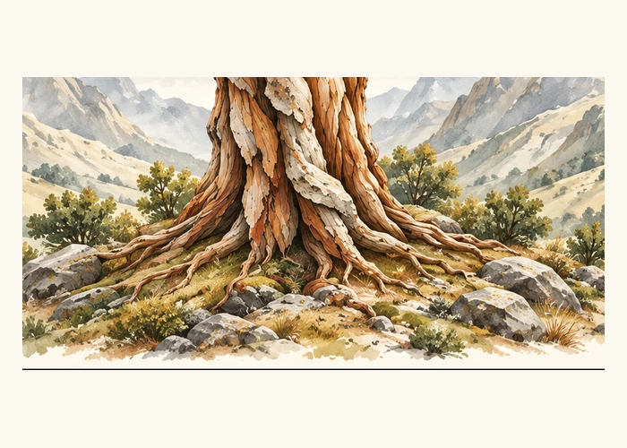
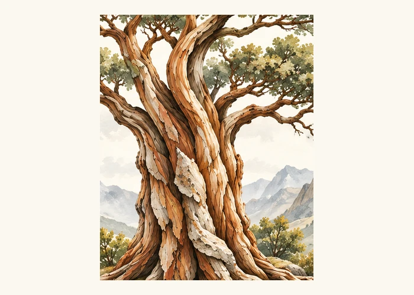
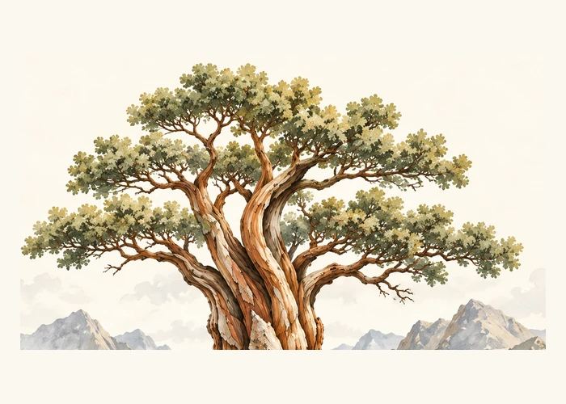
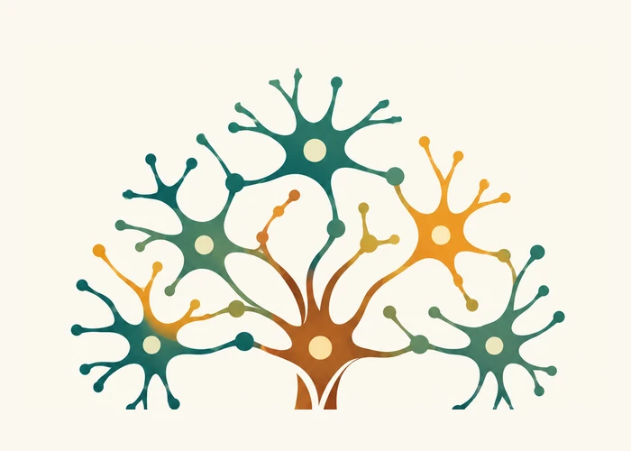
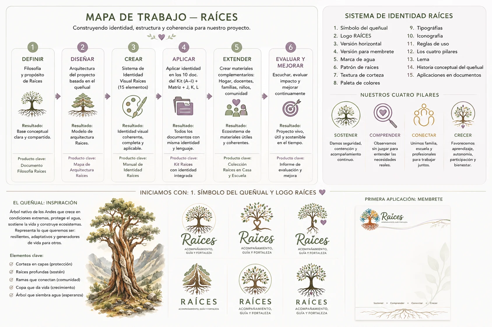

Lo que sostiene no siempre se ve
Elegimos el nombre Raíces porque una persona no se desarrolla de manera aislada. La familia, la escuela, los profesionales, las relaciones, la información disponible y las oportunidades forman parte de las condiciones que pueden sostener su participación y bienestar.
Las raíces no representan dependencia ni inmovilidad. Representan una base desde la cual pueden aparecer diferentes caminos y posibilidades.
Un símbolo con varias lecturas

01RaícesAquello que sostiene: historia, vínculos, seguridad y comprensión.

02TroncoContinuidad y conexión entre las distintas partes de la experiencia.

03RamasCaminos diversos, decisiones posibles y maneras distintas de participar.

04NodosPersonas, apoyos, conocimientos y entornos que pueden encontrarse.
Crecer no significa hacerlo de una sola manera
El símbolo recuerda que no existe una ruta universal. Cada persona puede necesitar apoyos distintos, en momentos distintos. Por eso Raíces busca comprender antes de proponer y acompañar sin corregir la identidad de nadie.
Crear condiciones para que la vida pueda sostenerse.
